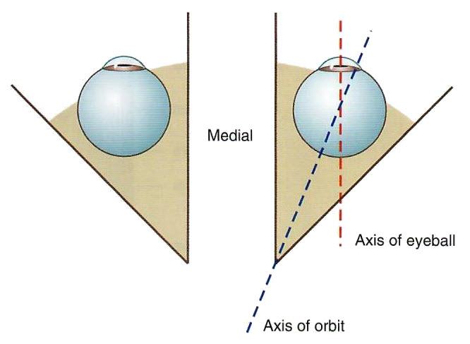

Neurology Lab 6 - Module 2 -Orbit - Muscles: Page 2 of 5
×

Ocular muscles - continued

| Remove the frontal and parietal bones to expose the superior surface of the orbit. |
| Add the eyeball. |
| Using the Rotate tool, examine the orientation of the eye in the orbit. |
Is the eyeball positioned in the orbit to allow us to look straight ahead? |
||
 |
||
How do the muscles of the orbit keep the eye aligned? |
|
|
Most of the muscle mass is located medially and therefore work together to maintain eyeball orientation. |
|
| An additional muscle is necessary to allow full movement of the eye. Add the levator palpebrae superioris. NOTE: The levator palpebrae superioris is not highlighted in this view of the cadaver. |
| Using the Highlight tool, highlight this muscle and watch the sagital section to see how it is oriented with respect to the superior rectus muscle. |
Why is this muscle an important part of eye movements? |
|
|
It lifts the eyelid in a superior direction when the eyeball is elevated. Otherwise you would just see the back of the eye lid. |
|